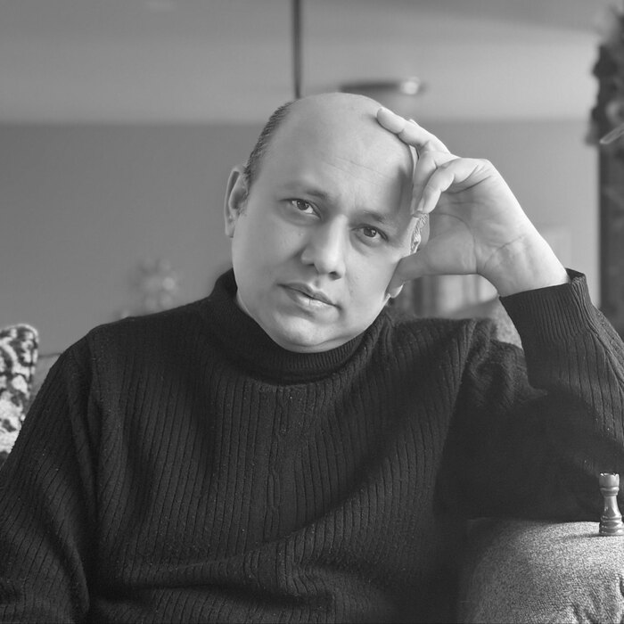

Syed Mehedi Hasan
Composer · co-founder
Writes the music for everything Ashwin releases. He has been composing on a guitar since long before there was a project to put it in, and a catalogue of instrumental pieces sits behind the songs: music written in Pavia, in Dhaka, and wherever else the work took him.
By profession he is a theoretical particle physicist. He took his Ph.D. at the University at Buffalo and now works on precision calculations for collider physics in Regensburg. The two halves of his life look unrelated and are not: both are the business of finding a small number of honest rules and letting them resonate.